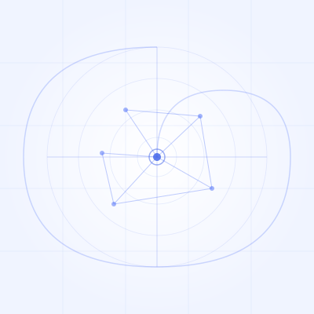
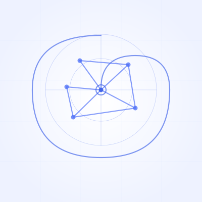

@maloncafe — Icon Review
2026-05-01 · white bg variants
V1 — ベース案

Geometric Network (テキストなし)
白背景 · ネットワーク + 黄金比スパイラル
★ V4 — 推奨案

Network + "Structure > Intuition"
白背景 · 幾何学ネットワーク · テキスト入り
下段：64px / 40px での縮小表示